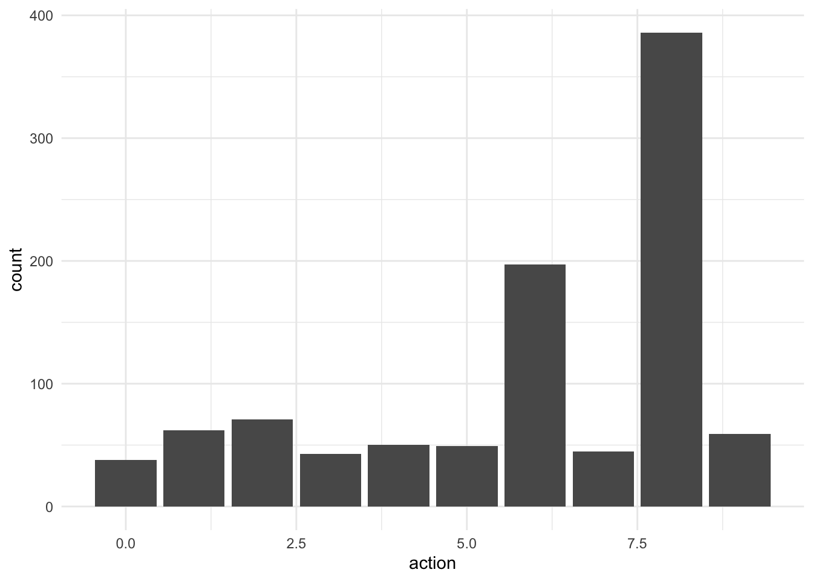
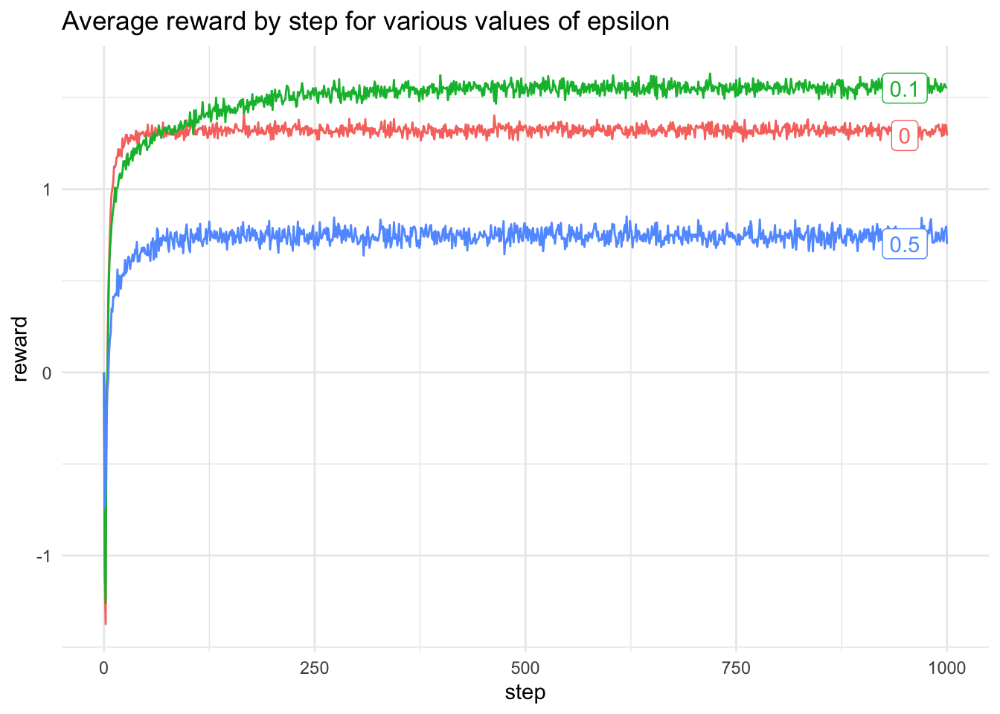

This post uses Almond in order to run Scala code in a Jupyter notebook. See my previous post to learn how to setup Jupyter, Ammonite and Almond. That post examined using the Scala libraries EvilPlot (including inline plotting in the Jupyter notebook) and Rainier for Bayesian inference in a simple linear model.
A multi-armed bandit is an analogy taken from the one-armed bandit slot machines where a lever is pulled and the player has an unknown probability of a prize. A multi-armed bandit is a generalisation, whereby the player is faced with multiple one-armed bandits each of which could have different rewards. The problem is to determine the best bandit to play. One way to determine this is to randomly pull levers to get information on the payout for each bandit. Assuming the probability of payout is constant in time, then after a period of exploration the player will be able to know which bandits pay the most.
Epsilon Greedy Method
One strategy to maximise the expected long-term reward from a bandit is to choose the bandit with the largest long-term reward a fraction of the time and the rest of the time choose a bandit uniformly at random in order to continually explore the space of actions. At each time step, the reward for a given action can be calculated and the long-term reward can be calculated as the function:
\[Q_{t+1}(A) = Q_t(A) + \frac{R_t(A) - Q_t(A)}{N_t(A)}\] where \(A\) is the current action, \(Q_t(A)\) is the long-term reward at time \(t\) for action \(A\), \(R_t(A)\) is the instantaneous reward for action \(A\) at time \(t\) and \(N_t(A)\) is the total number of times action \(A\) has been performed by time step \(t\). Before writing the algorithm for the epsilon greedy algorithm, first we define a few helper functions.
The first is to sample a value uniformly a random from a selection of values.
defsample(selection:Vector[Int]): Rand[Int]={for{ i <-Multinomial(DenseVector.ones[Double](selection.size))}yieldselection(i)}
If there are multiple actions with the same long-term reward then the next action should be selected randomly from all the actions which maximise the long term reward.
Firstly, we define a BanditState which contains all of the rewards \(R_t(A)\) for each time step, a list of length equal to the number of actions containing the long-term reward for each action. actions represents \(N_t(A)\) using a map from the index of the action to the count of actions. The algorithm proceeds by sampling a uniform random number, if this number is less than the chosen value of epsilon, then a random action is sampled from a Multinomial distribution with equal probabilities, otherwise the algorithm selects the action which currently has the highest long-term reward. The values are updated according to the formula above.
To run this algorithm for a pre-determined number of steps, realise that it is recursive and completely determined by the count and long-term reward at the previous time step. Hence it can be implemented as a Markov chain.
defbuildActions(actions:Int):Map[Int,Int]={(0 until actions).map(a => a ->0).toMap}defepsilonGreedy( epsilon:Double, actions:Int, reward:Int=> Rand[Double], n:Int): BanditState ={val initState =BanditState(Array(0.0),Vector.fill(10)(0.0),buildActions(actions))MarkovChain(initState)(banditStep(epsilon, reward,selectGreedy(epsilon))).steps.drop(n-1).next}
We can assume that the rewards for each of the ten actions is Normally distributed and define a suitable reward function
val qs =Gaussian(0,1).sample(10)// The reward is selected from a N(q(A_t), 1)defr(qa:Seq[Double])(action:Int): Rand[Double]=Gaussian(qa(action),1)// qs: IndexedSeq[Double] = Vector(// -1.1319170735731177,// 0.5392647196381599,// 0.7127636875526561,// 0.8765526115252499,// -0.9555744042626685,// -0.2723645491439034,// 0.10029206857194808,// 0.3758538986470721,// 1.9412629812694995,// 1.0620845496569054//)
Then the algorithm can be run for a single multi-armed bandit
val oneBandit =epsilonGreedy(0.5,10,r(qs),1000)
The distribution of actions at the end of 1,000 steps with epsilon = 0.5 and number of actions 10 is:
Rows: 10 Columns: 2
── Column specification ────────────────────────────────────────────────────────
Delimiter: ","
dbl (2): action, count
ℹ Use `spec()` to retrieve the full column specification for this data.
ℹ Specify the column types or set `show_col_types = FALSE` to quiet this message.
action_distribution %>%ggplot(aes(x = action, y = count)) +geom_col()

The mean reward at action 8 was highest at approximately 1.95, the epsilon-greedy algorithm prefers to take action 8.
Multiple Multi-armed Bandits
Now to see the behaviour of a typical multi-armed bandit with a constant reward function, calculate the average reward for n = 2,000 10-arm bandits each with 1,000 steps.
The average reward for each time step can then be plotted, this can be used to evaluate different choices of epsilon. Different values of epsilon can be compared and the average reward can be calculated
val data =List(0.0,0.1,0.5).map( eps =>averageReward(2000,1000, eps))
Rows: 3003 Columns: 3
── Column specification ────────────────────────────────────────────────────────
Delimiter: ","
dbl (3): epsilon, step, reward
ℹ Use `spec()` to retrieve the full column specification for this data.
ℹ Specify the column types or set `show_col_types = FALSE` to quiet this message.
average_reward %>%ggplot(aes(x = step, y = reward, colour =as.factor(epsilon))) +geom_line() +geom_label(data =filter(average_reward, step ==1000), aes(label = epsilon, x =950, y = reward), hjust = .5) +theme(legend.position ="none") +labs(title ="Average reward by step for various values of epsilon")

Citation
BibTeX citation:
@online{law2019,
author = {Law, Jonny},
title = {Multi-Armed {Bandits} in {Scala}},
date = {2019-04-16},
langid = {en}
}
For attribution, please cite this work as:
Law, Jonny. 2019. “Multi-Armed Bandits in Scala.” April 16,
2019.